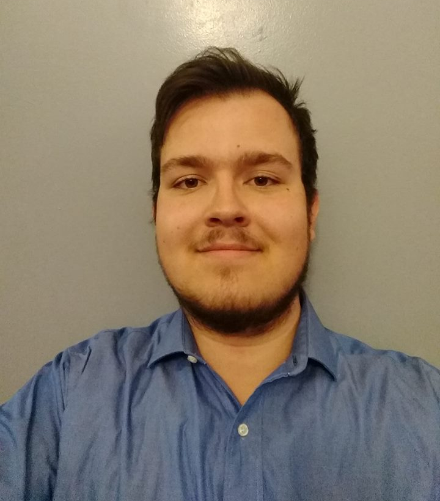

Samir Kušmić
Graduate Student, New Mexico State University

About Me
I have a B.Sc. in physics and I am currently a graduate student at New Mexico State University. My short-term goal is to earn my PhD, with long-term goals to continue my research. My interests lie in the extragalactic, where I hope to look into galaxy evolution and cosmology during the Epoch of Reionization.